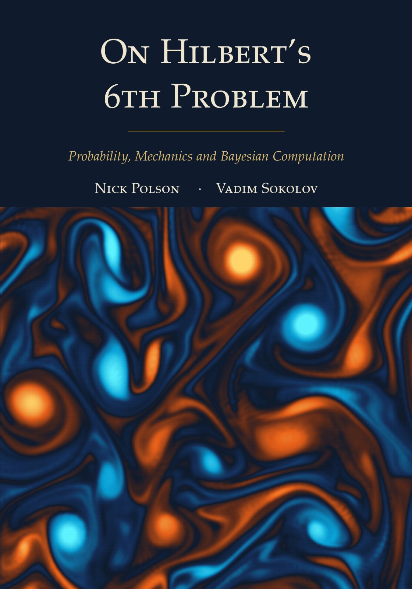

On Hilbert’s 6th Problem Probability, Mechanics and Bayesian Computation
By Nick Polson and Vadim Sokolov.


Description
In 1900 David Hilbert asked for a mathematical treatment of the axioms of physics, beginning with probability and mechanics, and for the limiting processes that lead from the atomistic view to the laws of motion of continua. This book follows that program, with Henri Poincaré as a central figure: Kolmogorov’s axioms, de Finetti’s theorem and Sanov’s large deviation theorem; ergodic theory and the method of types; Brownian motion, entropy and Nelson’s stochastic mechanics; kinetic theory, Lanford’s theorem and the passage from the Boltzmann equation to the Navier Stokes equations.
It then adds the inverse passage, from observed fluids back to the states that produced them. Part IV treats the inverse problem of a partial differential equation as Bayesian estimation on its solution manifold. For linear equations the adjoint evolution of the data is a sufficient statistic; for nonlinear equations it is asymptotically sufficient under a uniform Bernstein von Mises statement that the book states and leaves open. The cost of generative computation depends on the dimension that the data can resolve, and examples and experiments cover the heat, Navier Stokes and Schrödinger equations.
The last part treats inference itself as statistical mechanics: spin systems and Lee Yang zeros, Schrödinger bridges and generative Bayesian computation, gates as approximate nonlinear filters, and the thermodynamics of information. A final chapter lists open problems and builds a bridge to Hilbert’s eighth problem through the de Bruijn Newman heat flow. Every chapter closes with exercises, and the Python code behind the computed figures and tables is in the repository.
How to cite
Polson and Sokolov (2026), On Hilbert’s 6th Problem: Probability, Mechanics and Bayesian Computation, edition 1, https://doi.org/10.5281/zenodo.23327515.
@book{polsonsokolov2026hilbert6,
author = {Polson, Nick and Sokolov, Vadim},
title = {{On Hilbert's 6th Problem: Probability, Mechanics and Bayesian Computation}},
year = {2026},
publisher = {Independently published},
doi = {10.5281/zenodo.23327515},
url = {https://vsokolov.org/books/hilbert6/}
}Main results
- Adjoint representation of the sufficient statistic (Lemma 15.1, page 206): For a linear evolution equation that is diagonal in a fixed basis, the data statistic that is sufficient for the initial state is the coefficient vector of the time zero value of the solution of the backward adjoint equation driven by the data as point sources.
- Exact sufficiency, linear case (Proposition 15.2, page 207): In the linear model with a Gaussian prior the adjoint statistic is sufficient, the posterior given it is the full data posterior, and the conditional quantile map is exactly affine with slope equal to the posterior covariance.
- Equivalence of the one step efficient score summary with the efficient centering (Proposition 15.5, page 210): Under explicit regularity, rate and Lipschitz conditions, the cross fitted one step efficient score summary agrees with the efficient centering of Nickl’s Bernstein von Mises theorem to order smaller than the root N scale in a negative Sobolev norm, so it is a computable center of the Gaussian limit of the posterior.
- Jiang Wong under a uniform Bernstein von Mises assumption: the posterior mean summary is asymptotically sufficient (Theorem 15.38, page 256): If a Bernstein von Mises theorem holds uniformly over prior typical truths, then conditioning on the posterior mean alone, or on any summary root N equivalent to it, loses nothing at the root N scale: the recentered posterior given the summary and the recentered posterior given all of the data have the same Gaussian limit in Wasserstein distance. Status: conditional on The uniform Bernstein von Mises assumption (Assumption U, clauses (U1) to (U4)) for the posterior mean, and for the one step statistic the same assumption for that statistic; the book does not prove it (Open Question 17.18, Uniformity).
- Effective dimension under dissipation (Theorem 15.46, page 267): For the heat and Stokes equations on the torus with a power law prior, the number of modes in which the data at least halve the prior variance grows like a power of the sample size divided by viscosity times observation time, so dissipation lowers the effective dimension; for a nonlinear forward map, under a uniform Bernstein von Mises hypothesis and assumptions on the training residuals and the summary, a generator need only learn the posterior scale on those modes (in the linear model it needs no training), and the cost of using the prior spread beyond them is bounded explicitly. Status: conditional on Part (ii) for a nonlinear forward map assumes the hypotheses of the book’s Theorem 16.10 (Bernstein von Mises for the identity skip quantile generator), among them the uniform Bernstein von Mises assumption (Assumption U, open: Open Question 17.18), the whitened training residual assumption (U2’) (the whitened training residuals \(\mathcal{D}^{-1/2}\sqrt N(\theta^{(m)}-\hat S^{(m)}_N)\), \(\mathcal{D}=\operatorname{diag}(1/\iota_j)\), split, conditionally i.i.d. given the data, into a part whose projections on unit vectors have sub Gaussian norms given the data bounded in probability uniformly over the unit vectors and whose conditional second moment matrix tends in operator norm to the whitened limit covariance \(\mathrm{Id}+\Xi\), and a remainder whose conditional mean square norm tends to zero, all in \(P^N_{\theta_0}\) probability; the book proves it for training parameters drawn from a proposal localized at the preliminary estimate, under the other hypotheses, and it fails in general for a nonlinear forward map when they are drawn from the prior) and the error bounds \(\|\hat S_N-\theta_0\|_{L^2}=o_P(\tilde\delta_N(0))\), with \(\tilde\delta_N(0)\) the posterior contraction rate in \(L^2\), and \(\|\hat S_N-\theta_0\|_{H^{\bar\gamma}}=o_P(1)\), \(\bar\gamma\ge2\), on the summary, which the book leaves open for a nonlinear forward map other than reaction diffusion when the preliminary estimates have only the rates of the summary’s definition; parts (i) and (iii) and the linear case of part (ii) assume nothing unproved.
- Transfer of Bernstein von Mises guarantees to the GBC posterior (BvM for GBC) (Theorem 16.2, page 275): If the posterior produced by a generative Bayesian computation (GBC) generator is closer to the exact posterior than the root N scale in Wasserstein distance and concentrates on the localization set with bounded moments, then it inherits the Bernstein von Mises limit of the exact posterior for the initial condition and, for the reaction diffusion and two dimensional Navier Stokes equations, for the trajectory, with exact asymptotic coverage of its credible bands and, for Navier Stokes, attainment of the local asymptotic minimax bound for bounded losses; nothing is assumed about how the generator was trained.
- No uniform guarantee: minimax lower bound for conditional quantile generators over monotone Hölder classes (Theorem 16.15, page 290): Any generator, trained on M simulated pairs, that must be accurate at a fixed interior summary value for every conditional law in a monotone Hölder class of conditional quantile maps of smoothness beta on a J dimensional summary has, for some map in the class, Wasserstein error at least a constant free of J times (C M) to the power minus beta over (2 beta plus J) with probability at least 1/8, where C bounds the design density, so root N accuracy uniformly over the class requires at least N to the power 1 plus J over (2 beta) simulations divided by C, more than any polynomial once J grows; reading this as the accuracy condition of the transfer theorem uses the uniform Bernstein von Mises assumption.
All 75 results of the book (58 proved, 11 conditional, 5 open, 1 counterexample) are on the page Results by chapter, each with its statement, status and number.
License: Text, figures and PDF: CC BY 4.0. Code: MIT.
This page is generated from the book’s repository (main). The numbers and pages are those of the PDF, version 1.0.0.